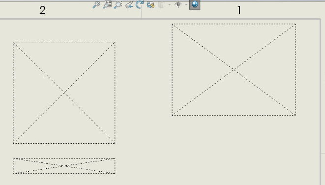
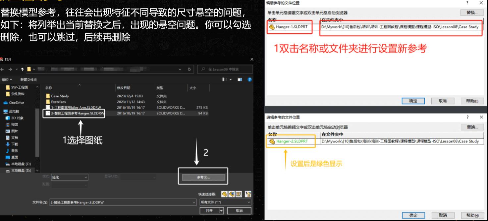
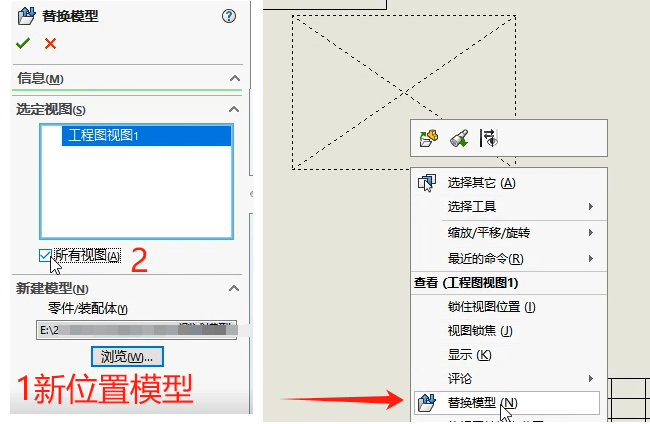
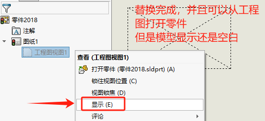

工程图视图空白
参考的零部件模型已从发生移动，导致工程图参考丢失，因此它以空白视图打开。
如果在将模型保存到新位置时图形处于打开状态，则不会出现此问题…图形的参照将更新。就像在 Windows 中使用右键单击 SOLIDWORKS > 移动模型一样 > 移动 > 更新。
方法1：打开参考替换
选择“文件”>“打开”。找到打开对话框下的【参考】按钮，双击旧模型的路径，来浏览到模型的新位置(替换后，模型名字会变绿)
然后打开工程图，此时模型可能会出现尺寸悬空的情况，我们可以忽略。在后续修改即可。
方法2：替换模型
在打开工程图界面里，右键丢失参考的空白视图【替换模型】，浏览到新位置下的模型进行替换参考即可。
方法3：显示视图
替换完成，并且可以从工程图打开零件，但是模型显示还是空白。可以将模型【显示】恢复
